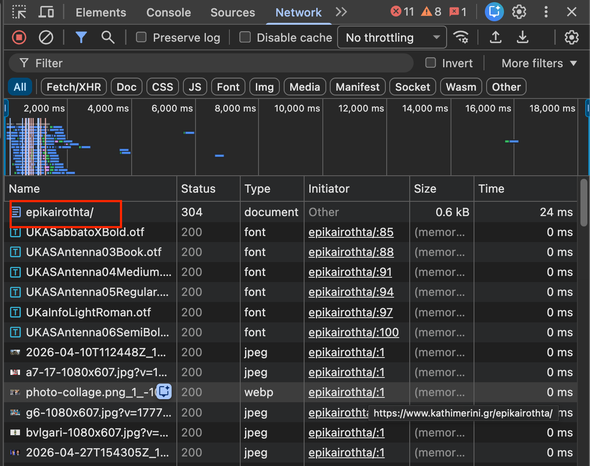
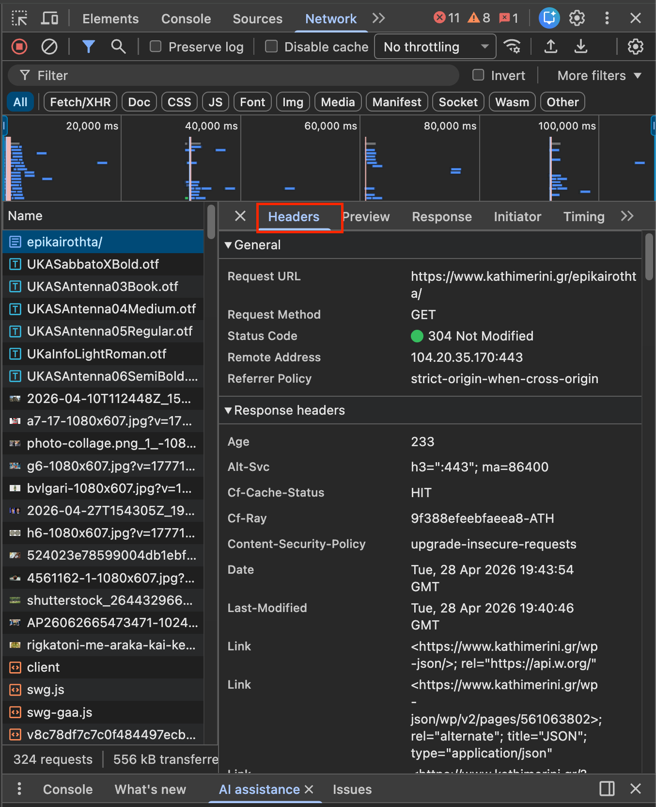
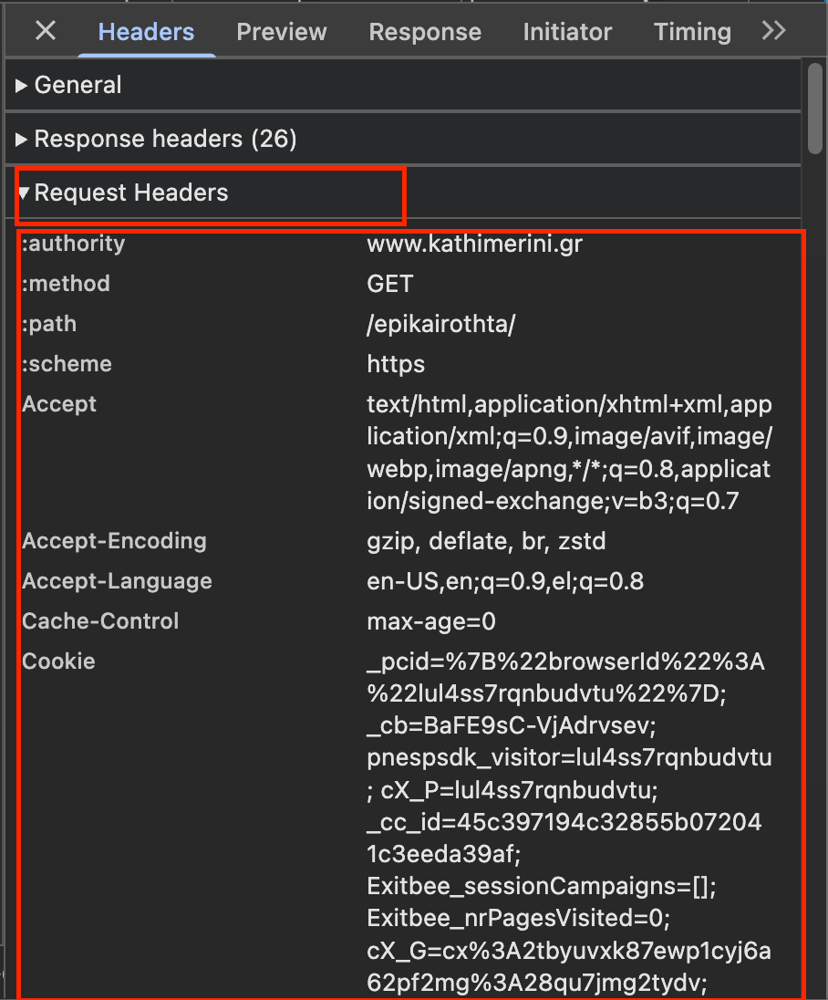

Part One
Two Lines to Fetch a Page
The first line makes the HTTP request. The second reads the HTML text that came back from the server.
response.text is the raw HTML string. response.status_code tells you whether the request succeeded: 200 means success, 404 means the page was not found, and 403 means the server refused the request.
Part Two
Looking Like a Browser
Real sites often expect browser-like headers. The most important one is User-Agent, which tells the server what browser you are using. For Greek content, it also helps to set Accept-Language. Without these, many sites return a 403 Forbidden or serve you a stripped-down page.
Where do the right headers come from?
The safest source is your own browser. When you visit a page, your browser sends a complete set of headers to the server. You can see them by opening the DevTools Network tab. Here is how:
- Open the page you want to scrape in Chrome or Firefox (e.g.
https://www.kathimerini.gr/epikairothta/).

- Press F12 (Windows / Linux) or Cmd ⌘ + Option ⌥ + I (Mac) to open DevTools.
- Click the Network tab at the top of the DevTools panel.
- Reload the page with Cmd ⌘ + R (Mac) or Ctrl + R (Windows). You will see a list of requests appear.
- Click the very first request in the list — it is the one for the page itself, not for images or scripts. Its name matches the URL you typed.

- In the panel that opens on the right, scroll down to the Request Headers section.
- You will see a list like this:
accept: text/html,application/xhtml+xml,... accept-encoding: gzip, deflate, br accept-language: el-GR,el;q=0.9,en-US;q=0.8 cache-control: max-age=0 user-agent: Mozilla/5.0 (Macintosh; Intel Mac OS X 10_15_7) AppleWebKit/537.36 (KHTML, like Gecko) Chrome/124.0.0.0 Safari/537.36
Right-click on any header line and choose Copy value, or select all the text and copy it. You now have the raw header list your real browser sent.

Ask Claude to format the headers for you
The headers in DevTools are shown as plain text, one per line. You need them as a Python dictionary. The easiest way is to paste the raw text into Claude and ask:
Here are the request headers from Chrome DevTools. Please convert them into a Python dictionary called
headers that I can pass to requests.get(). Format the result as clean Python code.[paste your headers here]
Claude will return something like this, ready to paste straight into your notebook:
Always set a timeout. Without timeout=30, your code can wait forever on a slow server.
requests.get(...) return values that you save into variables.
Part Three
From Response to Soup
Once you have the HTML string, the next step is always the same: hand it to BeautifulSoup.
From this point on, the requests part stays mostly the same. The interesting work is what you do with soup. Here are the main methods you will use throughout this book:
| What you want | Method | Example |
|---|---|---|
| First tag that matches | find() |
soup.find("a") |
| All tags that match | find_all() |
soup.find_all("a") |
| Tag by class name | find(class_=) |
soup.find("a", class_="mainlink") |
| Tag by id | find(id=) |
soup.find(id="main") |
| Visible text inside a tag | get_text() |
tag.get_text(" ", strip=True) |
| Value of an attribute | get() |
tag.get("href") |
| Tags matching a CSS selector | select() |
soup.select("a.mainlink") |
<a class="mainlink"> and titles inside <span class="card-title">.
Part Four
Moving from Page 1 to Page 2
The first page is https://www.kathimerini.gr/epikairothta/. The second page is https://www.kathimerini.gr/epikairothta/page/2/. This pattern will later let you loop through many pages with range().
This is the first important pagination idea of the book: some pages are not discovered by clicking buttons in Python. You build the next URL as a string.
page/2/, page/3/, and so on. In the final chapter you will place that if/else logic directly inside a for loop over range().
Part Five
Your Turn — Fetch and Explore
Copy this block into your notebook. It fetches the live page and prints the first five titles it finds.
requests.get() fetches a live page; what response.text and response.status_code contain; how to send browser-like headers; how to turn the HTML into soup; and how page 2 follows the URL pattern .../page/2/. In the next chapters you will use BeautifulSoup to extract the exact fields you want.
Chapter Navigation
Move between chapters.